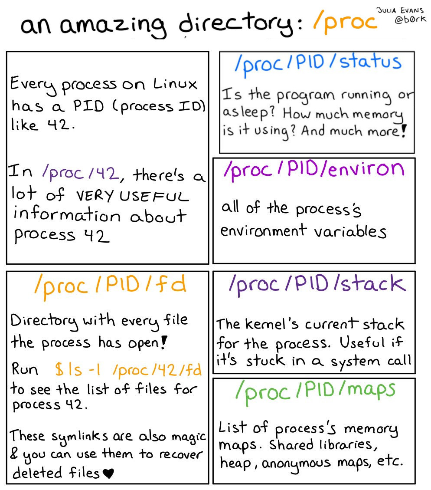
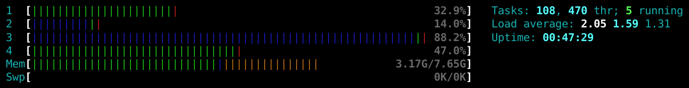
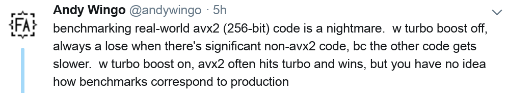

class: center, middle # Benchmarking and performance analysis of scientific Python Roman Yurchak <div style="height:100px"></div> .pull-left[ *EuroScipy, August 2018* ] .pull-right[  ] --- ## Introduction A number of great tools for efficient scientific computing with Python: numpy vectorization, Cython, numba, etc. Benchmarking and profiling is a first step in any optimization, - Focus on real-world cases, not micro-benchmarks - Which algorithm is faster? How does it scale? What metrics should should we evaluate? --- ## Measuring run time 1 `time.time` ```py x = np.random.radn(1000) t0 = time() x.sort() dt = time() - t0 ``` simplest, precision of 1 µs (Linux, Mac OS), 16 ms (Windows) -- 2 `timeit` module ```py timeit.repeat('x.sort()', repeat=5, number=1000) ``` avoids a number of common traps for measuring execution times -- 3 IPython magic ``` %timeit x.sort() ``` automatically determines `repeat`, `number`. --- ## Different timeit approaches | Number of files on Github | `time.time` | `timeit` | `%timeit` | |---------------------------|-------------|----------|-----------| | Python scipts | 108k | 40k | 7k | | Jupyter notebooks | 2.3k | 2k | 24k | <div style="height:50px"></div> -- - `%timeit` not easily usable from scripts `ipython.magic('timeit..` → see [perf](https://github.com/vstinner/perf) package -- - parametric benchmarks: string templating, partial functions ? - evaluating other metrics with a similar API - need standard results format --- ## Neurtu package Benchmarking package that allows evaluations of multiple metrics, - uses timeit for time measurement, with determination of the number of iterations - uses [memory_profiler](https://github.com/pythonprofilers/memory_profiler) for peak memory evaluation -- Based on delayed evaluation, ```py from neurtu import delayed, timeit x = np.random.radn(1000) expr = delayed(X).sort() timeit(expr) ``` Facilitating parametric benchmarks (e.g. evaluate time complexity) <div style="height:-50px"></div> .pull-right[ [github.com/symerio/neurtu](https://github.com/symerio/neurtu) ] --- ## Neurtu: parametric benchmarks (1) Define benchmark cases, ```py import numpy as np from neurtu import delayed rng = np.random.RandomState(42) cases = [delayed(rng.rand(N), tags={'N': N}).sort() for N in [1000, 10000, 100000]] ``` -- then measure e.g. their run time, ```py >>> neurtu.timeit(cases) wall_time N 1000 0.000009 10000 0.000092 100000 0.001075 ``` returns a `pandas.DataFrame` (if pandas is installed). --- ## neurtu: parametric benchmarks (2) Get more statistics, ```py >>> timeit(cases, repeat=3, aggregate=('mean', 'max', 'std')) wall_time mean max std N 1000 0.000009 0.000010 7.060015e-07 10000 0.000090 0.000091 1.059947e-06 100000 0.001053 0.001056 2.141577e-06 ``` -- and other metrics, ```py >>> bench = neurtu.Benchmark(wall_time=True, cpu_time=True, peak_memory=True) >>> bench(cases) cpu_time peak_memory wall_time N 1000 0.000009 0.0 0.000010 10000 0.000092 0.0 0.000096 100000 0.001094 0.0 0.001105 ``` --- ## Demo: benchmarking LogisticRegression [github.com/rth/talks/EuroScipy2018/logistic_regression_scaling.ipynb](https://github.com/rth/talks/blob/master/EuroScipy2018/logistic_regression_scaling.ipynb) --- ## Other OS level metrics .pull-left[  by *Julia Evans ([adapted](https://drawings.jvns.ca/proc/))* ] -- .pull-right[ <div style="height:150px"></div> [psutils](https://psutil.readthedocs.io/en/latest/) in Python * information on running processes and system utilization (CPU, memory, disks, network, sensors) * cross platform ] --- ## Evaluating parallel performance Sometimes by looking at `htop` output,  Loading all CPU cores is not the objective, faster computing is. -- Better to evaluate the **strong scaling**: increase the computational resources (threads, processes) for a fixed problem size. -- - results may be strongly impacted by CPU frequency scheduling  -- - parallel code may be slower in some cases: always check. --- ## BLAS multithreading Common BLAS implementations (OpenBLAS, MKL, Accelerate) are multithreaded. **Most scientific Python code based on numpy is parallelized by default**. Potentially better performance, but with some communication overhead. -- `export OMP_NUM_THREADS = 1` doesn't work at runtime → `neurtu.blas.Blas().set_num_threads` (also see [loky](https://github.com/tomMoral/loky)) Soon, ```py cases = [delayed(X, tags={'OMP_NUM_THREADS': num_threads}).dot(X.T) for num_threads in [1, 2, 4, 8]] ``` --- ## Conclusions - A package for parametric benchmarks with a common API for different metrics -- - Future work: estimation of time and memory complexity O(N^p), fixed computational budget, support of more `psutil` metrics. --- class: center, middle Thank you! Questions? <div style="height:150px"></div> .pull-left[ @RomanYurchak ] .pull-right[ [github.com/symerio/neurtu](https://github.com/symerio/neurtu) ]